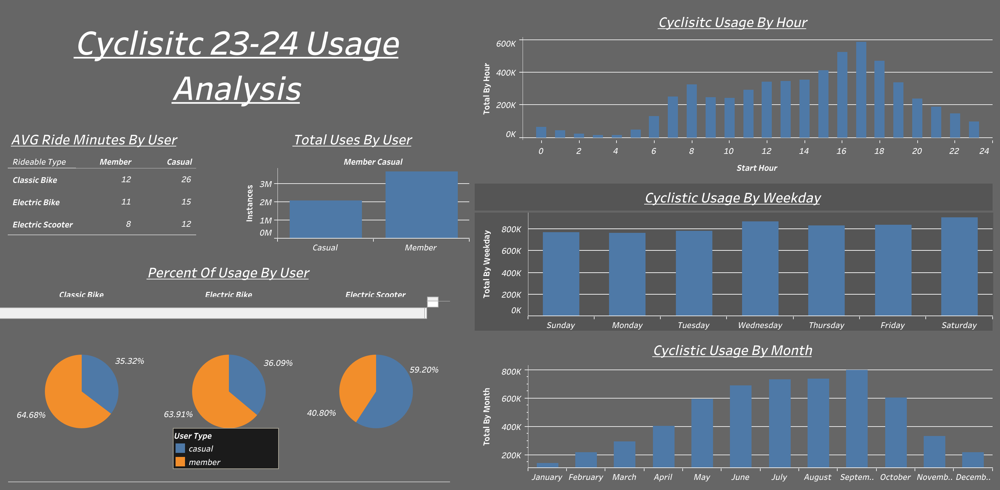

The first dashboard I created was based on the overall usage patterns. Below will be some interesting findings and I will come up with a business plan to convert casual users to members.- On average, members used the Cyclistic service for shorter ride durations (as indicated by the average ride minutes per user). However, the total number of rides taken by members was nearly double that of casual users, suggesting that members are more likely to consistently utilize the service after subscribing. Cyclistic currently offers three types of services: Classic Bikes, Electric Bikes, and Electric Scooters. Among these, Electric Bikes are the most frequently used. Members predominantly used both Classic Bikes and Electric Bikes, while Electric Scooters—though with a smaller sample size—were more commonly used by casual riders.
- The date analysis was conducted using the start_at and end_at columns by converting the data into timestamps and extracting the necessary time components for analysis. This allowed me to examine Cyclistic service usage patterns by hour, weekday, and month. By hour, the data revealed that 17:00 was the peak usage time, with over 500,000 occurrences. The weekday analysis showed an even distribution of usage across all days, with Saturday experiencing a slightly higher frequency. Monthly analysis indicated that the summer months had the highest usage, which aligns with the company’s fictional location in Chicago, where winter temperatures often drop below 10 degrees Fahrenheit, likely discouraging outdoor activities.